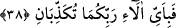
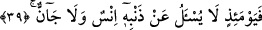

melekler bölük bölük indirilecekler” (el-Furkân, 25/25) âyet-i kerîmesinde
buyrulduğu gibi. Bu yarılmanın cehennem ateşinin şiddetinden dolayı olduğu rivâyet
edilmiştir.
“Verde”, genellikle kırmızı renkte olup köklenen ve herkesçe tanınan çiçektir.
Eğer kırmızı renkte bir gül olsaydım bana âşık olurdun.
Ancak Rabbim beni siyah yarattı demiştir.
Denildi ki, aslında gökyüzünün rengi kırmızıdır. Bir takım engeller ve uzaklık
sebebiyle mavi görünür. Ateşin rengine de mavilik karışınca kırmızı bir renk alır.
Gök, cehennemin harâretinden eriyip kırmızılıkta gül gibi, eriyip akmada ve incelikte
zeytin yağı gibi olur. Gök yarılıp da kızarmış yağ renginde gül gibi olduğu zaman, öyle
tehlikeli ve korkunç durumlar olur ki, dille söylenecek hiç bir ifâdeye sığmaz.
Sa’dî Müftî de demiştir ki; hiç bir dilin târif edemiyeceği kadar korkunç şeyler olur.
Gök yarıldığı zaman, büyük ve korkunç işin olduğunu görürsün. Bu takdirde bu âyet-i
kerîmeden anlaşılan olayın sebebi bir önceki âyettir. Çünkü, dumansız yalın alevin
gönderilmesi tehlikeli olayların görünmesine sebeptir.
38. Rabbinizin hangi nimetlerini yalanlayabilirsiniz?
Çok büyük ve önemli olayların zuhûr ettiğini görürsün.
39. İşte o gün insana da cine de günahı sorulmaz.
“İşte o gün” yâni zikredildiği şekilde gök yarıldığı gün “insan’a da cin’e de günahı
sorulmaz.” Çünkü onlar yüzlerinden tanınırlar. Bu sebeple bir kimse mahşer halkının
durumlarını öğrenmek istediği takdirde günahkârı diğerinden ayırmak için kişinin
günahının ne olduğunu sorma ihtiyacı duymaz. Bu durum, kabirlerinden çıkarılıp
derecelerinin değişikliğine göre mahşer yerine bölük bölük götürüldükleri ilk sıradadır.
Ancak, “Rabbinin hakkı için, mutlaka onların hepsini sorguya çekeceğiz.” (el-Hicr,
15/92) âyeti sorgu ve hesaba çekilen yer hakkındadır.
İbn Abbâs (r.a.)’in şöyle dediği rivâyet edilmiştir; Allah ne yaptıklarını onlardan
daha iyi bildiğinden, “şunu ve şunu yaptınız mı?” diye sormaz, lakin “şunu, şunu neden
yaptınız?” diye sorar. Yine İbn Abbâs (r.a.)’ın, “onlara rahatlık ve şifâ veren bir
üslupla değil, ayıplama ve azarlama sorusu sorulur” dediği rivâyet edilmiştir.